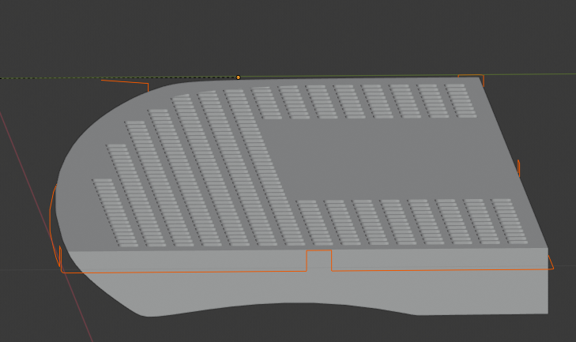
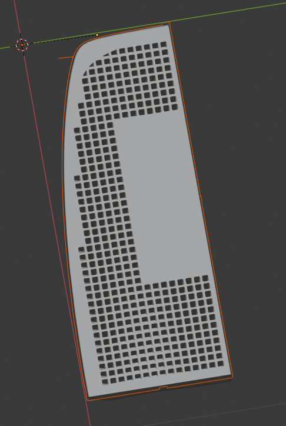
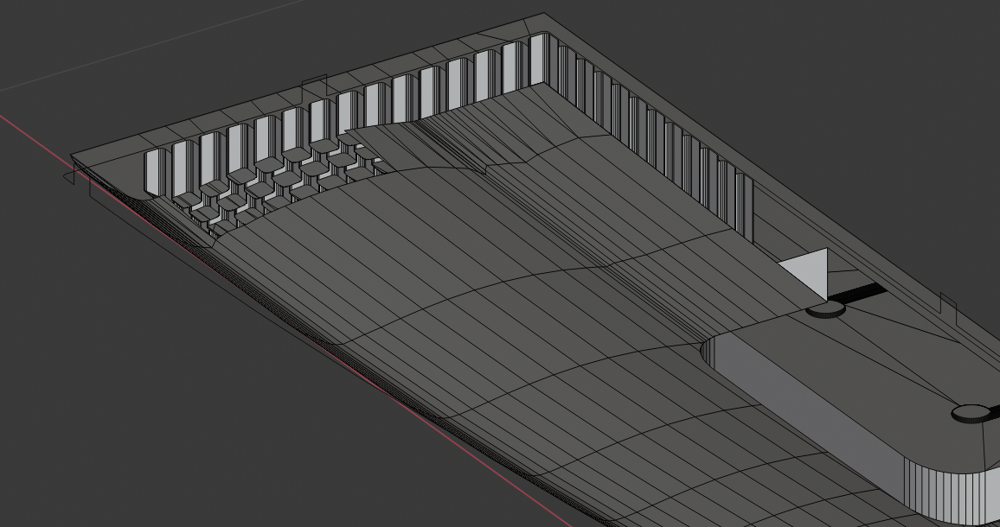
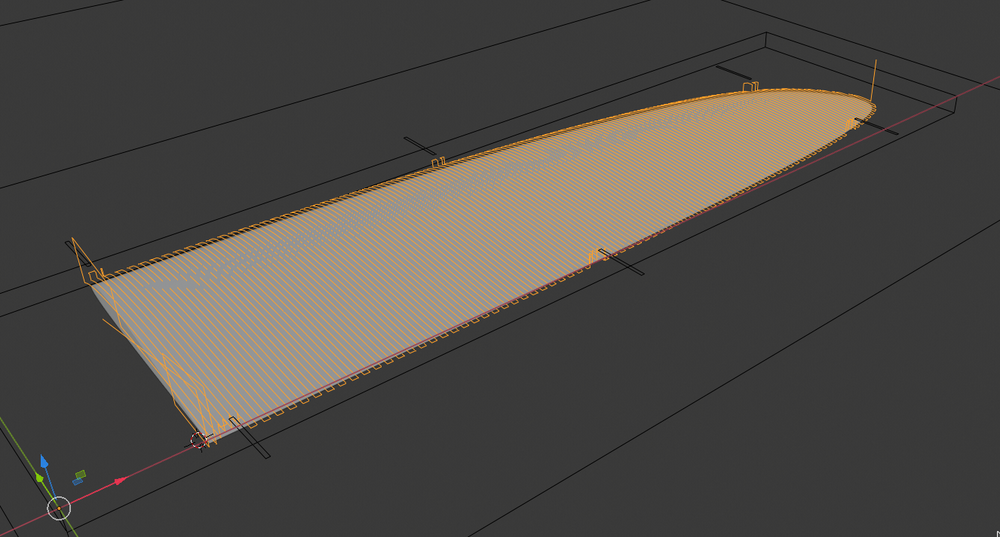

Motivation for using Blender
After my initial tests with FreeCad, I opted for blender and the great blendercam for design and gCode generation for complex parts (like airfoils).
The main reason is that I usually build 3d sphapes like surfboards, airfoils and wings for hydrofoils, which I construct script based. Blender is great for this. I might add some more details about my approach in this section.
Some examples:
The following 3 pictures show 1/4 of a SUP board foam core with heavily milled-away foam in the inner. The holes go 'down' to 10mm distnace from the surface.



The follwoing picture shows 1/2 of an airfoil including the calculated milling path for coarse milling.
